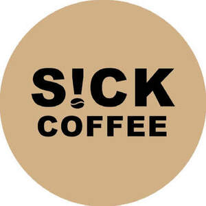

Trade Mark Journal No.2025/032 8 August 2025
UK00004240037 27 July 2025 (30,43)

- Class 30
- Coffee; Coffee bags; Coffee drinks; Chocolate coffee; Iced coffee; Mixtures of malt coffee with coffee; Coffee beverages; Coffee essences for use as substitutes for coffee; Decaffeinated coffee; Coffee extracts for use as substitutes for coffee; Malt coffee; Drip bag coffee; Coffee substitutes [artificial coffee or vegetable preparations for use as coffee]; Coffee beans; Coffee (Unroasted -); Unroasted coffee; Coffee beverages with milk; Coffee oils; Coffee pods; Coffee based drinks; Beverages with coffee base; Beverages with a coffee base; Beverages made from coffee; Beverages made of coffee; Coffee capsules; Mixtures of malt coffee extracts with coffee; Coffee flavorings; Instant coffee; Coffee based beverages; Caffeine-free coffee; Coffee flavourings; Flavoured coffee; Coffee in whole-bean form; Coffee essences; Ice beverages with a coffee base; Aerated drinks [with coffee, cocoa or chocolate base]; Coffee extracts; Ground coffee; Powdered coffee in drip bags; Coffee concentrates; Substitutes (Coffee -); Coffee substitutes; Cappuccino; Coffee in brewed form; Espresso; Freeze-dried coffee; Unroasted coffee beans; Coffee mixtures; Prepared coffee and coffee-based beverages; Aerated beverages [with coffee, cocoa or chocolate base]; Mixtures of coffee; Prepared coffee beverages; Roasted coffee beans; Mixtures of coffee essences and coffee extracts; Coffee, teas and cocoa and substitutes therefor; Ground coffee beans.
- Class 43
- Coffee shops; Coffee shop services; Coffee bar services; Leasing of coffee makers; Serving food and drink in doughnut shops; Providing food and drink in doughnut shops.
SICK COFFEE LTD